Web development
Uit eigen interesse heb ik tijdens mijn MBO 2 opleiding heel veel geleerd over front end webdesign.
Hierbij hoort de basiskennis van HTML, CSS en JS, zowel als creatieve inbeelding van hoe je wil dat een
website er uit zien.
Mijn portfolio website (de website waar u nu deze tekst op aan het lezen bent) heb ik helemaal handmatig
gecodeerd met de voorheen benadrukde codeertalen. Dit doe ik momenteel als hobby, maar het is natuurlijk
geweldig om dit ook als toekomstigge baan te kunnen doen.
VR / Unity game-engine
De combinatie van hobby's aan zowel Virtual Reality, als Unity game-engine, komt door het spel VRChat.
In dit spel heb ik namelijk mijn eigen 3D avatars gemaakt met Unity en Adobe 3D Substance Painter.
Uiteindelijk heb ik bij mijn opleiding op het SintLucas een paar opdrachten gekregen met het gebruik van Unity.
Deze opdrachten hebben mij veel geleerd over Unityscript, C# en game development in het algemeen.
Gitaar spelen
Rond de covid periode ben ik begonnen met het leren van gitaar spelen. Hier heb ik een jaar lang les in
gehad, en verder heb ik alles zelf geleerd
Ik speel voornamelijk Punk-Rock en Metal. Vaak neem ik kleine covers van al bestaande nummers op om mijn
progressie te laten zien aan vrienden en familie. Maar ik zit er soms wel aan te denken om misschien
zelf iets te schrijven, of om het in goede kwaliteit op te nemen en ergens te uploaden (youtube of
spotify).
 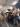
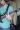
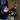
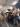
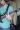
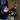
Digitale kunst
Het gebeurt natuurlijk ook wel eens dat het weer iets minder mee zit, en ik toch creatief bezig wil
zijn. Hierdoor ben ik begonnen met het maken van digitale kunst. Hiervoor heb ik ook een toegewezen website.
Deze hobby ben ik ook begonnen te doen rond te covid periode. Ik gebruik "Medibang paint pro" als teken
applicatie, en de "Wacom intuos M" als teken tablet. Ik teken voornamelijk denkbeeldige karakters, en
simpele omgevingen.
 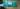
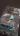
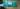
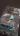
Skateboarden
Skateboarden is van origine een Amerikaanse sport die ontstaan is eind jaren zestig van de 20e eeuw. De
sport is ontwikkeld door surfers die surfen wilden op het land, en wordt vaak gelinkt met de
jeugdcultuur.
Zelf skateboard ik een heel stuk minder lang dan het voorheen gezegde stuntskaten, maar het is net zo
leuk en creativiteits gericht kwa tricks landen. Ook helpt het enorm met het socializeren met vrienden.
 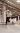
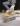
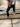
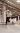
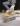
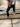
 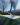
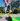
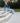
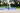
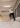
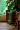
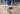
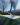
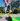
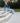
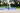
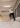
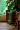
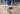
Aggressive Inline Skaten
Zoals gezegd wordt het ook wel eens stuntskaten genoemd. Aggressive skating is dus een vorm van skaten
waarbij er veel tricks en stunts worden gedaan. Vaak wordt dit gedaan in een skate park, op
verschillende obstakels en ramps. Denk hierbij aan tricks als grinden, grabs en spins. De aggressive
skates moeten dus wendbaar zijn, maar tegelijk ook stevig om bescherming te bieden tegen de harde
klappen van de sprongen.
Ik doe dit al sinds 2016, en als het goed weer is gebruik ik hierdoor mijn stuntskates ook als
vervoermiddel om naar de winkel te gaan. Deze topsport geeft mij vooral een gevoel van vrijheid, en ik
kan mijn creativiteit goed benutten met de tricks die bij stuntskaten hoort.
 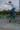
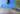
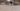
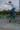
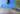
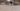
Andere kleine hobbies
Ik heb ook enorm veel kleine hobbies die niet hun eige alinea waard zijn, maar ik kan ze gelukkig wel
allemaal samenvatten in 1 grote alinea! Dit zijn van die kleine hobbies waar ik mij een maand lang heel
erg
op focust, en daarna raak je het misschien eens elke volle maan aan.
Een paar goede voorbeelden van dit soort hobby's zijn:
- Rubiks kubussen oplossen
- Jo-jo trucjes doen
- Koken
- Fotografie
- Voor mijn hond zorgen
- Klussen
- Desktop computers bouwen
 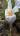
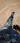
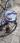
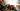
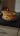
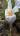
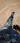
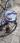
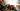
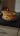